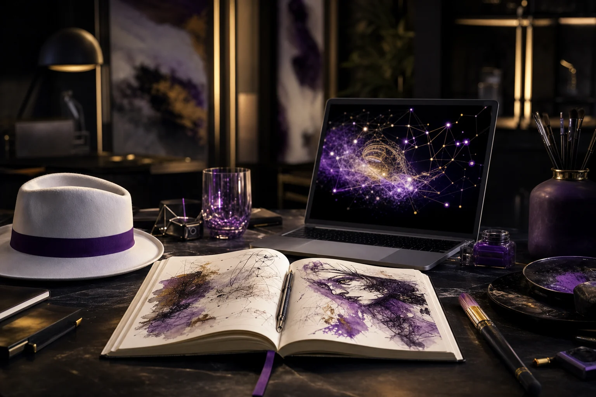
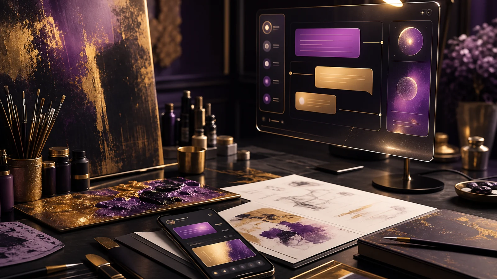

Ideen sind Kapital: Wie Kreativität mit AI zu echten MVPs wird
Warum Ideen, AI-Sparring und schnelle MVPs ein echter Skill für kreative Selbstständigkeit und finanzielle Handlungsfähigkeit sind.
Artikel lesenPhils persönlicher Blick auf AI, Sichtbarkeit und Marketing: was aus dem Atelier heraus wirklich hilft, wenn man nicht mehr nur auf Glück, Reichweite oder den nächsten Auftrag warten will.
Warum Ideen, AI-Sparring und schnelle MVPs ein echter Skill für kreative Selbstständigkeit und finanzielle Handlungsfähigkeit sind.
Artikel lesenVom AI-Spielzeug zum echten Workflow: Wie kleine Agenten über Telegram, Cronjobs, Memory und Skills nützlich werden.
Artikel lesen
10.06.2026 · AI-WorkflowNutze AI nicht nur für Texte, sondern als System für Ideen, Entscheidungen, Content und klare nächste Schritte.
Artikel lesenMach aus einer starken Beobachtung mehrere klare Formate, ohne in generischen Content-Lärm abzurutschen.
Artikel lesen 10.06.2026 · AI-Workflow
10.06.2026 · AI-Workflow
Nutze KI nicht nur zum Schreiben, sondern als Sparringspartner, bevor du entscheidest, was wirklich gesagt werden muss.
Artikel lesen
09.06.2026 · KI im MarketingNutze KI nicht für mehr Lärm, sondern als zweiten Blick auf deine nächste echte Marketing-Aufgabe.
Artikel lesenMit AI zu einer stärkeren Marke, die nicht nur auffällt, sondern wirklich verstanden wird.
Artikel lesen